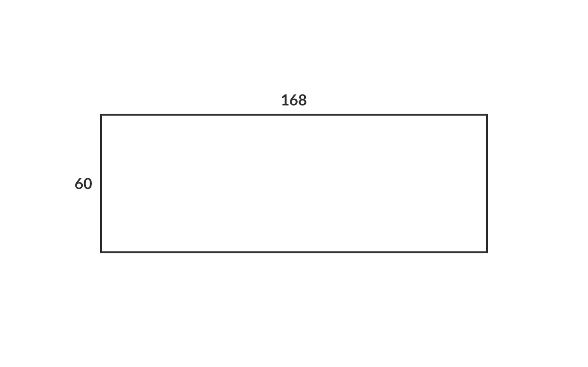
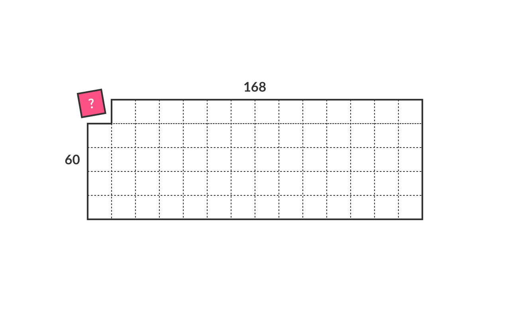
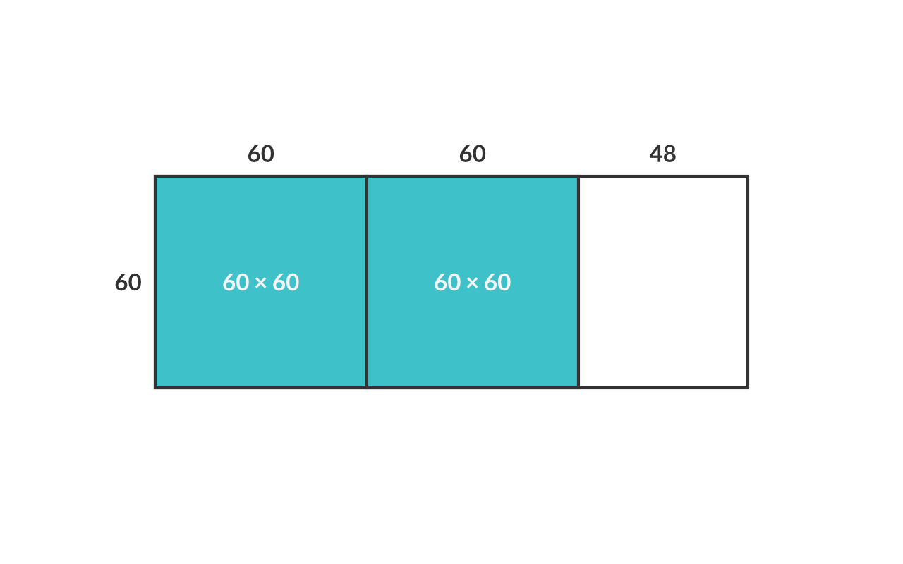
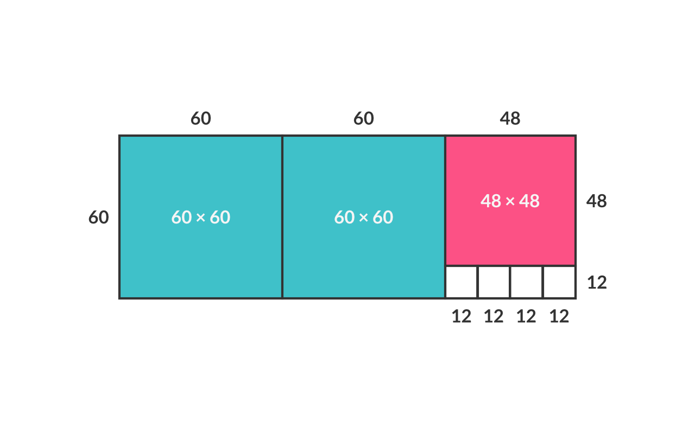
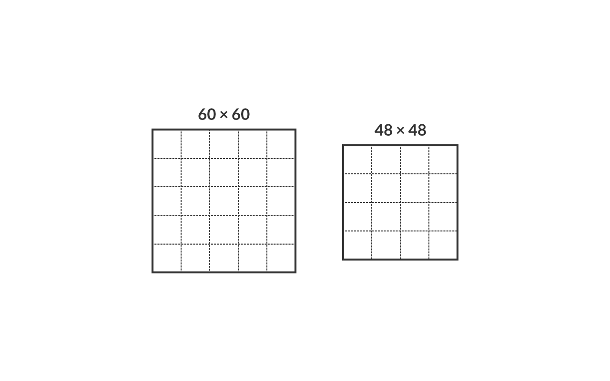
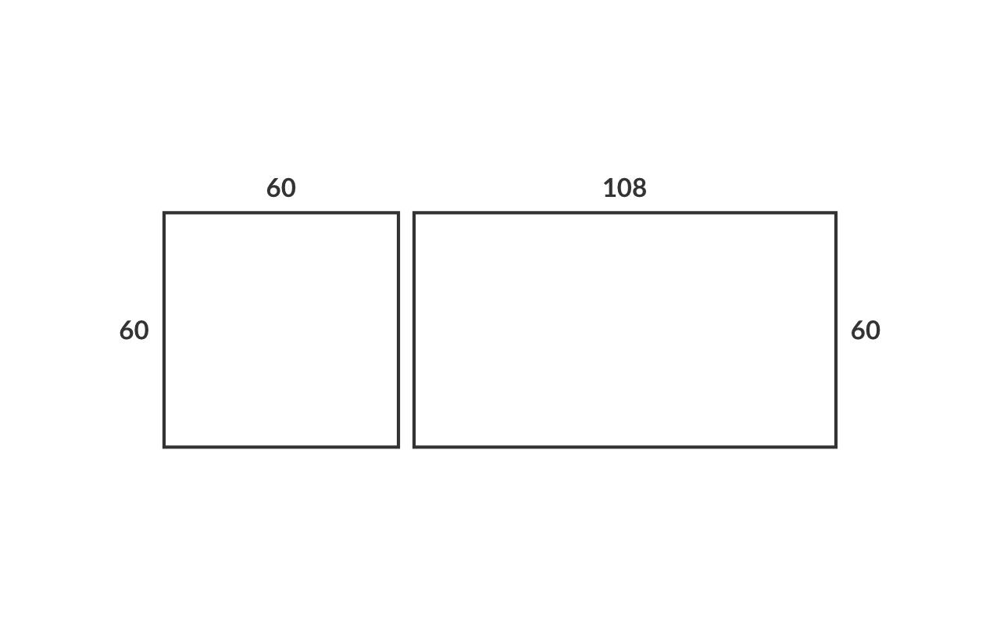

最大公約数（以下GCD）とは2つの整数の公約数のうち最大のものを指します。例えば、60と168のGCDは12です。
GCDの求め方で、最も基礎的かつ原始的な方法は、それぞれの整数の約数を一旦すべて羅列し、そこから共通する最大のものを抽出するというやり方です。
このやり方でやると、
60の約数 = 1, 2, 3, 4, 5, 6, 10, 12, 15, 20, 30, 60
168の約数 = 1, 2, 3, 4, 6, 7, 8, 12, 14, 21, 24, 28, 42, 56, 84, 168
ですから、確かに60と168のGCDが12であることがわかるでしょう。
しかしながら、もし整数が非常に大きな場合、このやり方では処理量が多く、正確性、スピードに欠けるのです。
そこで、違ったアプローチでGCDを求めることを考えましょう。
いまあなたの目の前に縦60cm×横168cmの紙があるとしましょう。

そこからごみを一切出さず、同じ形かつできるだけ大きな正方形を切り出すとしましょう。正方形の1辺は何cmにすればよいでしょうか。

答えは実は60と168の最大公約数になるのです。
まず、ぴったり切り出すために、正方形の1辺は60と168の公約数でなければいけませんし、その中でできるだけ大きな正方形となると1辺の長さがGCDになるのです。
こうした正方形は次のようなやりかたでも切り出せます。
まず60×60の正方形を2枚切り出します。

つぎに残った部分から48×48の正方形を一つ切り出します。同じことを繰り返すと、最終的に元の紙は、大きさの異なる正方形で次のようにちょうど切り分けられるでしょう。

48×48の正方形は12×12の正方形4枚分に相当しますし、60×60の正方形は12×12の正方形9枚分に相当しますので、やはり元の紙は12×12の正方形でちょうど切り出せるのです。

ここで、整数mと整数nのGCDをgcd(m,n)と表記することにしましょう。(m,nの最大公約数を求める関数とみてもいいでしょう）先述の通りgcd(60,168)=12が成り立ちます。
それではgcd(60,108)はいくらだと思いますか？
縦60×横108の紙を想像してみてください。これは先ほどの紙から60×60の正方形を切り取ったものですのでgcd(60,108)=12となるのは容易に推測できますね。
同様に、gcd(60,48)=gcd(12,48)=12になることも理解に困らないでしょう。

ここから導き出せる1つの再帰アルゴリズムは次のような式で表現できます。
gcd(m,n) = gcd(m-n,n) (m > n)
gcd(m,n) = gcd(m,n-m) (m < n)
gcd(m,m) = m
試しに210と45をgcd関数の中に入れてみましょう。
gcd(210,45)
= gcd(165,45)
= gcd(120,45
= gcd(75,45)
= gcd(30,45)
= gcd(30,15)
= gcd(15,15)
=15
最大公約数は15になります。
上の処理をコード化すると以下のようになります。
int gcd(int m, int n) {
if(m == n) {
return m;
}else if(m > n){
return gcd(m-n,n);
}else{
return gcd(m,n-m);
}
}
gcd(44,242); // 22
注意しなければいけないことは、先程のようなやり方は、あくまでも最大公約数を導く１つのやり方に過ぎないということです。一般に1つの問題に対して様々なアルゴリズムが考えられ、我々はその中で最適なものを臨機応変に選ぶ必要があるのです。
GCDを導く他のやり方として、ユークリッドアルゴリズムという方法があります。
このアルゴリズムを学習する前に、剰余演算子mod（％）について学びましょう。この演算子は次のように使われます。
A mod B = (A÷Bの余り)
例：9 mod 2 = 1
もしくは、
A mod B = A - B⌊A÷B⌋ （⌊A÷B⌋は、A÷Bにmath.floor（四捨五入）をしているという意味）
例： 9 mod 2 = 9 - 2 * ⌊4.5⌋ = 9 - 2*4 = 1
このmodを用いることで、無駄な処理を省くことができるのです。
例えば先ほどのアルゴリズムでは、
gcd(60,168)
=gcd(60,168-60)=gcd(60,108)
=gcd(60,108-60)=gcd(60,48)
としていた計算も、modを用いれば、
gcd(60,168)
=gcd(60, 168 mod 60) = gcd(60,48)
と短縮されるのです。
この剰余演算子modを用いたアルゴリズムは次のような式で表現できます。
gcd(m,0) = a
gcd(m,n) = gcd(m, m mod n)
例を見てみましょう。3355と2379の最大公約数を求めてみます。
gcd(3355,2379)
= gcd(3355,976) (3355 ÷ 2379 = 1 余り976)
= gcd(976,427) (976 ÷ 427 = 2 余り122)
= gcd(427,122) (427 ÷ 122 = 3 余り61)
= gcd(122,61) (122 ÷ 61 = 2)
= gcd(61,0)
= 61
上の処理をコード化すると以下のようになります。
int gcd(int m, int n) {
if ((m % n) == 0){
return n;
}else{
return gcd(n, m % n);
}
}
gcd(44,242); // 22
この魔法のようなアルゴリズムがまだ腑に落ちない場合は、実際に紙の上に書いて処理を理解してみましょう。